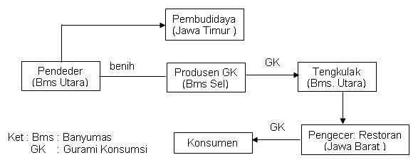
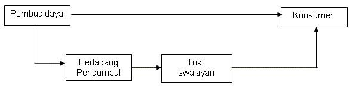

Pemasaran Benih
Benih yang dihasilkan oleh pendeder dapat langsung di jual kepada pembesar ikan yang menjadi langganannya secara langsung atau melalui pedagang parantara. Penjualan benih biasanya disertai jaminan terhadap resiko kematian selama beberapa waktu tertentu (biasanya 1 sampai dengan 2 minggu), tergantung kesepakatan antara pembeli dengan penjual. Transaksi penjualan benih dapat dilakukan di pasar ikan atau di kolam ikan. Biasanya permintaan benih meningkat setelah hari raya yaitu untuk memenuhi kebutuhan benih yang akan dibesarkan setelah ikan gurami ukuran konsumsi habis di panen untuk hari raya.
 Pemasaran Gurami Konsumsi
Ikan gurami konsumsi di jual dari pembudidaya kepada pedagang pengumpul untuk selanjutnya di jual kepada pengecer yang diteruskan kepada konsumen akhir. Namun demikian ada kalanya pembudidaya ikan langsung menjual kepada konsumen akhir. Biasanya penjualan ikan gurami konsumsi meningkat pada saat perayaan hari-hari besar.
 Harga PasaranHarga ikan gurami ditentukan oleh kondisi permintaan dan penawaran di pasar. Harga ikan gurami di suatu daerah tidak bisa dilepaskan dari pengaruh produksi di daerah lain karena sistem transportasi memungkinkan terjadinya perpindahan produk dari satu daerah ke daerah lainnya. Berdasarkan hal ini, produksi ikan yang melimpah pada suatu daerah dapat mengakibatkan pasar ikan gurami di daerah konsumsi ikan mengalami kelebihan penawaran sehingga terjadi penurunan harga. Harga per kilogram ikan gurami konsumsi di tingkat pembudidaya adalah Rp 15.000 sedangkan di tingkat konsumen dapat mencapai Rp 20.000. Pada saat terjadi penurunan harga ikan, harga di tingkat pembudidayaan turun menjadi Rp 12.000 per kg sedangkan di tingkat konsumen turun menjadi Rp 18.500 per kg. Kendala PemasaranPenetapan waktu menjual yang ditentukan oleh kebutuhan keuangan petani dapat mengakibatkan kondisi yang kurang menguntungkan bagi pembudidaya karena kebutuhan yang mendesak akan memperlemah posisi tawar mereka sehingga dapat mengakibatkan penjualan ikan dengan tingkat harga yang lebih rendah. Apalagi apabila pemasaran ikan dilakukan secara sendiri-sendiri. Sebagai alternatif untuk meningkatkan posisi tawar pembudidaya, pembudidaya hendaknya bergabung pada satu wadah kelompok tani atau koperasi yang berfungsi sebagai lembaga pemasaran sehingga penetapan harga akan lebih menguntungkan bagi kedua belah pihak. Wadah tersebut nantinya dapat bermitra dengan perantara pemasaran. Walaupun di beberapa tempat ditemukan adanya wadah tersebut, namun belum berfungsi sebagai lembaga pemasaran produk secara kolektif. |